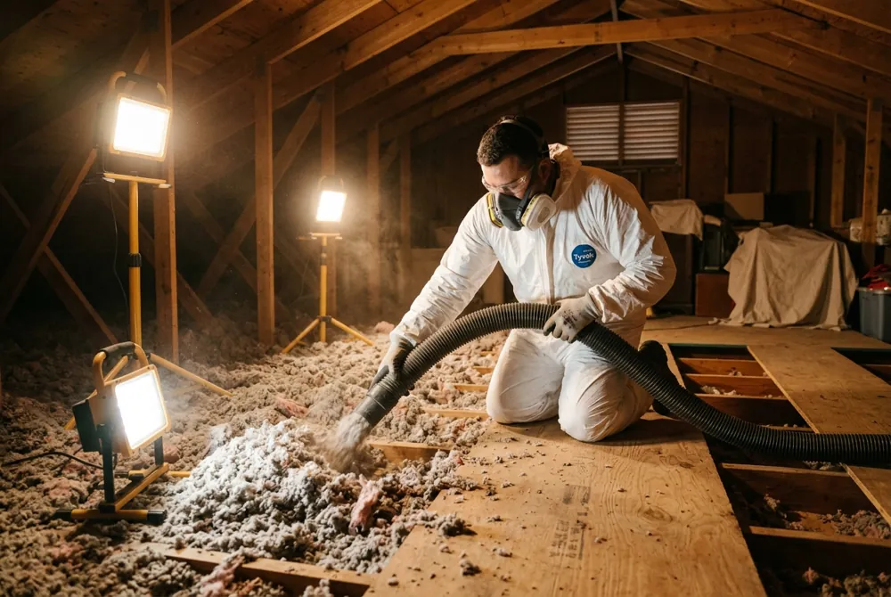
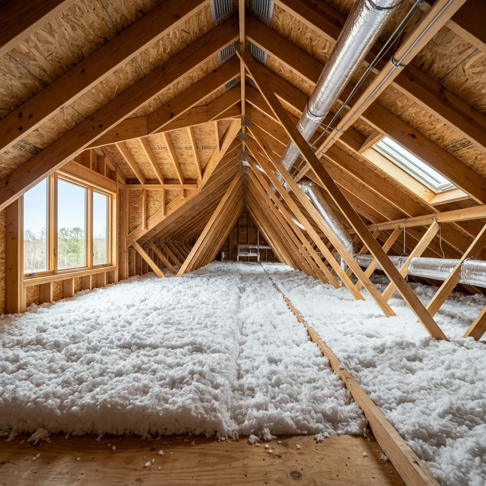
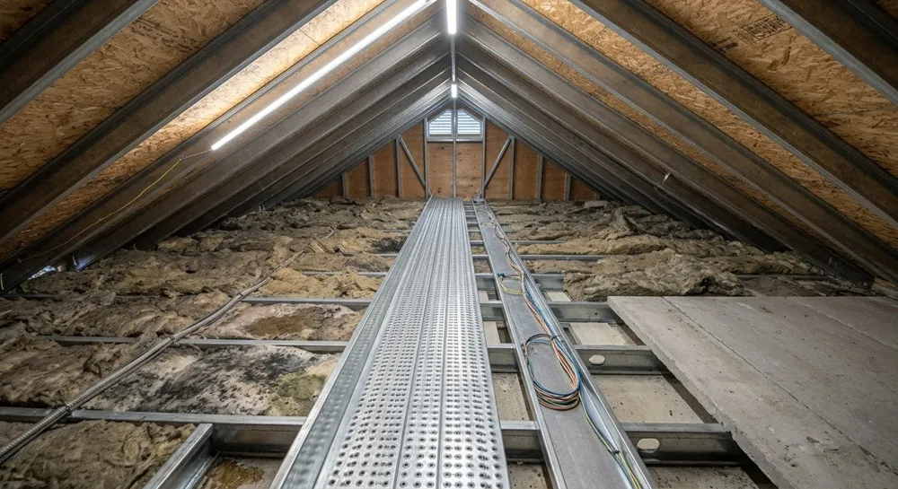
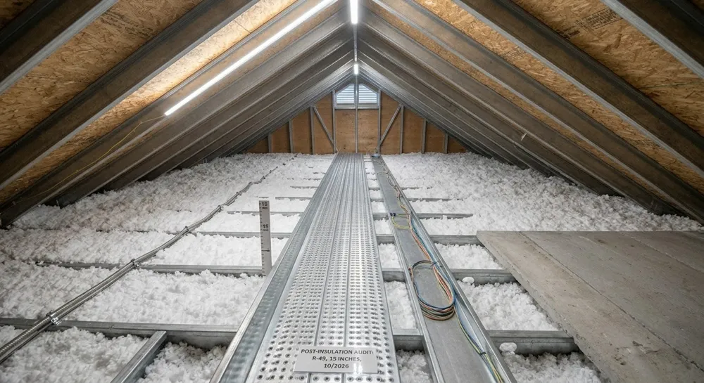

The removal price depends on the size of the attic and how much old insulation is in the attic. Any closing air gaps and new insulation work for the attic is listed in writing on your estimate.
Insulation Removal Houston TX
We take wet and moldy insulation out of a Houston attic and put in new insulation. Removal can cut the smell, help the upstairs stay cooler, and keep dust and stale air out of the rooms below. Most jobs take one to two days, and we get back to you the same day. Book a free walkthrough and we will check your attic and give you a written estimate.
5.0 stars from 6 Google reviews.
Attic Insulation Removal Houston
Most attics do not need the old insulation removed. Old insulation needs to come out when it is wet, stained, moldy, or full of rodent droppings.
Wet insulation loses R-value and stays wet long enough for mold to grow. Moldy insulation comes out. Rodent droppings can smell and can carry disease into the air in the house. A roof leak can soak an attic fast. A flood or a burst pipe can do the same. After Hurricane Harvey, nearly 136,000 structures flooded in Harris County.
Look for bare patches on the attic floor. If the upstairs stays hot while the downstairs stays cool, thin or damaged insulation is one possible cause.
How do you take wet insulation out?
We take wet insulation out with a big vacuum machine. Then we let the attic dry before we put in new insulation. We bag the wet insulation and haul it away on the first day of the job, so nothing damp stays in your attic.
Old Insulation Removal Houston TX
Age alone is not a reason to take the old insulation out. Fiberglass can last 80 to 100 years in a dry attic. Cellulose lasts 20 to 30 years and starts to wear down around 15 years. Age matters only if the old insulation is wet, stained, moldy, or full of rodent droppings.

Can New Insulation Go Over Old Insulation?
Yes, if the old insulation is clean and dry. New blown in insulation goes over the old insulation in a Houston attic. When the old insulation is dry and flat, its R-value still counts toward the total.
New blown in insulation cannot go on damaged insulation. The damage underneath traps moisture, and the damp smell stays. The old insulation needs removal first.
What Insulation Removal Costs in Houston
$1.00 to $1.50 per square foot is the removal price for a Houston attic. Removal for a 1,000 square foot attic costs $1,000 to $1,500.
| Service | Price |
|---|---|
| Old insulation removal | $1.00 to $1.50 per square foot |
| Removal plus new insulation | $2.00 to $4.00 per square foot |
| Closing air gaps | $250 to $740 per attic, when leaks are found |
Does homeowners insurance cover insulation removal and replacement?
Sometimes. A sudden roof leak or storm damage is often covered, while wear, age and long term moisture usually are not. Cover depends on what damaged the insulation and on the wording in your policy. We give you a written estimate for the removal and the replacement, so you can send it to your insurer with your claim.
Insulation Removal Houston
Yes, old insulation comes out. Blown in fiberglass insulation is removed with an industrial vacuum. Spray foam insulation is cut from the wood with a saw and scraped off by hand.
Rolled Insulation Replacement Houston TX
The crew lifts batt insulation out in whole pieces and rolls it up by hand.
Attic Insulation Removal Houston TX
The industrial vacuum sits outside the house. A hose runs through the attic door and into the attic.
How Long Insulation Removal Takes in Houston
Removal takes 4 to 6 hours for an attic of 1,500 square feet with a crew of three. A full job takes one to two days. Spray foam removal is slower than blown in insulation removal. Doing the removal yourself takes 6 to 18 hours for that attic.
Where the Old Insulation Goes After Removal
The crew bags the old insulation as it comes out and hauls it away.
Safe Insulation Removal Houston TX
A professional crew keeps dust and contamination inside the attic. We seal the heating and cooling returns so dust does not get into the ducts. Rodent droppings carry disease. The crew wears protective equipment. That includes a P100 or N95 respirator, goggles, coveralls, and gloves. Mold grows in damp insulation. The crew takes moldy insulation out in sealed bags. After removal, we inspect the attic floor and the wood under the roof for dampness and mold. We check for the leak that caused the dampness. Mold comes back with the new insulation if the leak stays.
Asbestos and Vermiculite Testing
Vermiculite from before 1990 may contain asbestos. If your attic has vermiculite, we have the vermiculite tested before we touch it. A lab test tells you whether the vermiculite contains asbestos. Until the result comes back, the insulation stays where it is. If the test is positive, a licensed asbestos crew does the removal.
Rodent Contamination
Rats and mice nest in insulation, leave droppings and urine, and chew the insulation.
Professional Insulation Removal Houston TX
Removal by a professional crew costs $1.00 to $1.50 per square foot, and the full job takes one to two days for most Houston homes. We take out the wet, moldy, or smelly insulation that makes the upstairs hot and the house smell, so new insulation can go in on a clean attic floor. Nails stick out of the wood, and you can step through the ceiling if you step off the joists. Blown in fiberglass irritates skin, eyes, and lungs. Spray foam work needs an organic vapor respirator.

| Risk | Do it yourself | Professional crew |
|---|---|---|
| Asbestos | Do not disturb it | Hire an asbestos contractor |
Is it safe to vacuum out attic insulation myself?
No. Vacuuming stirs up dust, mold spores, and rodent droppings. A home vacuum clogs fast and blows fine dust back into the air. We use an industrial vacuum that keeps the dust sealed inside, so it stays out of your living space during the job.

Attic Insulation Replacement Houston TX
A full replacement takes one to two days for most Houston homes and costs $2.00 to $4.00 per square foot for removal plus new insulation. The old insulation comes out first. New blown in fiberglass insulation at R38, 13.5 inches deep, goes in last. The new layer keeps the upstairs cooler. The crew does the air sealing when leaks are found, while the attic floor is bare, because sealant sticks best to a clean attic floor. Those gaps are hidden once new insulation covers the floor, so air sealing cannot wait. The crew installs the blown in fiberglass and measures the depth of the new insulation as they work.
Old Insulation Replacement Houston TX
Replacement is the right call when the old insulation is wet or damaged and cannot be saved. Clean, dry insulation that is only thin can stay in place, with new insulation blown in on top instead. Homes with two floors often need R49 upstairs, and the crew confirms the exact R value target on the walkthrough.
Mistakes to Avoid When You Remove Insulation in Houston
-
Skipping the asbestos check. Insulation in a Houston home built before 1990 may contain asbestos, including vermiculite from 1919 to 1990. Do not disturb the insulation. Hire an asbestos contractor.
-
Doing the removal yourself with a home vacuum takes 6 to 18 hours for a 1,500 sq ft Houston attic. A professional crew finishes the same attic in 4 to 6 hours.
-
Skipping the air sealing. When the walkthrough finds leaks, we seal them after removal and before new insulation goes in, because the sealant needs a clean attic floor to stick to.
What to Expect on the Day We Remove Your Insulation
The full job, removal plus new insulation, takes one to two days for most Houston homes, with air sealing added when the walkthrough finds leaks.

-
We need to reach the attic door.
-
We need space outside for our machine, so the dust stays out of your rooms while we work.
-
We need you to move cars and clear a path before the crew arrives, so the crew can start on time.
Home Insulation Removal Houston TX
Insulation removal costs $1.00 to $1.50 per square foot for the removal work alone. The service covers more than the attic. Wall insulation that is wet or has settled and left gaps comes out, so new insulation can fill the wall again. Crawl space insulation that is wet, moldy, or full of rodent waste comes out, so the space under your home is clear for new insulation. We bag the old insulation at the source and take it away.
Before and After: Insulation Removal in Houston
The photos are from a real Inner Houston job. The home was built in the 1970s or 1980s, and the upstairs stayed hot because the insulation was wet and stained. We removed the damaged insulation and blew in new fiberglass insulation. The before photo shows the wet and stained insulation in place. In the after photo, the attic has new insulation in place.


Insulation Removal and Replacement FAQ
Yes. We cut spray foam insulation off the wood with a saw and scrape it off by hand. Spray foam is fixed to the wood, so hand work is the only way to remove it. After we remove the foam, we check the attic floor for leaks before we put in replacement insulation to R38.
Yes. You need a big vacuum machine and protective gear for a hot attic full of dust and rodent waste. Removing insulation takes a crew of three 4 to 6 hours for a 1,500 square foot Houston attic. A homeowner with rented equipment takes 6 to 18 hours for the same attic.
Yes, when insulation in a home is damaged, removal at $1.00 to $1.50 per square foot is worth it. Damaged insulation has lost R value and should come out. Clean, dry, thin insulation can stay and be topped up to R38 instead. During the walkthrough we tell you whether the insulation needs removal or a top up.
Yes. Insulation installed before 1990 in a home can contain asbestos. Vermiculite, which looks like small flakes, is the type to check first. The only way to know if it has asbestos is a lab test. Do not remove it until you have the result. If the result is positive, a licensed asbestos crew removes it.
Yes. We remove moldy insulation from an attic before we put in replacement insulation to R38. We bag the insulation at the source as we remove it, so mold does not spread through the house. After we remove it, we check the attic floor and the wood under the roof first.
Yes. When rodents damage insulation in a home, we remove the damaged insulation and the droppings. We bag them at the source and carry them out. A wildlife company must trap live animals first and seal the entry points. We clean the attic before we put in replacement insulation.
Insulation Removal Service Houston
Call (832) 291-2738 Monday to Saturday, 8am to 6pm, to book a free walkthrough at your home. During the walkthrough we measure how thick the insulation is, look for damage, and check that we can reach the attic door. We give you a written estimate that prices removal at $1.00 to $1.50 per square foot. We get back to you the same day. Most jobs are scheduled within the same week, and the full job takes one to two days. Our address is 9310 Central Park Vista Ln, Houston, TX 77080.
Call anytime(832) 291-2738
Office hoursMon–Sat 8am–6pm